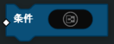

ルール(RULES)
ルール
ルール(RULE)
ルールブロックは、ゲーム内のイベントからトリガーされます。 イベントがトリガーされると、このブロックはその条件が満たされているかどうかを確認し、アクションのすべてを実行します。
次の例では、条件は、プレイヤーがキルを獲得したときに、そのチームが目標スコアに達しているかどうかをチェックしています。そして、アクションが実行され、この場合、プレイヤーの勝利としてゲームモードを終了します。
ルール ブロックイベントの種類
- 開催中(Ongoing)
- 開催中(Ongoing) イベントタイプは、指定された 条件 がTrueになったかどうかを継続的にチェックします。Trueになった場合、 アクション が 一度だけ実行 されます。イベントが再び実行されるには、条件が再びTrueになる前にFalseになる必要があります。開催中(Ongoing) イベントタイプは、 全体(Global)、プレイヤー(Player)、チーム(Team)のコンテキスト が存在します。プレイヤー(Player)とチーム(Team)コンテキスト内では、イベントプレイヤーやイベントチームなどのペイロードブロック(Event Payloads)を使用して、イベント内の特定のプレイヤーやチームを参照することができます。
注釈
注：FFAの開催中(Ongoing)イベントはチーム(Team)コンテキストは一切実行されません。
- プレイヤー被キル時(OnPlayerDied)
- これは プレイヤー(Player) がキルされるたびにトリガーされます。ペイロード：イベントプレイヤー(EventPlayer)（キルされたプレイヤー）、その他のイベントプレイヤー(EventOtherPlayer)（キルを行ったプレイヤー）
- プレイヤー出撃時(OnPlayerDeployed)
- これは、 プレイヤー(Player) が出撃するたびにトリガーされます。ペイロード：イベントプレイヤー(EventPlayer) （出撃したプレイヤー）
- プレイヤーのゲーム参加時(OnPlayerJoinGame)
- これは、 プレイヤー(Player) がゲームに参加した時にトリガーされます。ペイロード：イベントプレイヤー(EventPlayer)（参加したプレイヤー）
- プレイヤーのゲーム離脱時(OnPlayerLeaveGame)
- これは、 プレイヤー(Player) がゲームを離脱したときにトリガーされます。
- プレイヤーキル時(OnPlayerEarnedKill)
- これは、 プレイヤー(Player) が他のプレイヤーに対してキルを獲得したときにトリガーされます。ペイロード：イベントプレイヤー(EventPlayer)（キルを行ったプレイヤー）、その他のイベントプレイヤー(EventOtherPlayer)（キルされたプレイヤー）
- ゲームモード終了時(OnGameModeEnding)
- ゲームモード終了時にトリガーされます。
- ダウン時(OnMandown)
- これは、 プレイヤー(Player) が強制的にダウン状態になったときにトリガーされます。ペイロード：イベントプレイヤー(EventPlayer)（ダウンしたプレイヤー）
- 蘇生時(OnRevived)
- これは、 プレイヤー(Player) が他のプレイヤーによって蘇生されたときにトリガーされます。ペイロード：イベントプレイヤー(EventPlayer)（蘇生されたプレイヤー）、その他のイベントプレイヤー(EventOtherPlayer)（蘇生したプレイヤー）
- 制限時間経過時(OnTimeLimitReached)
- ゲームモードの制限時間に達したときにトリガーされます。
- ゲームモード開始時(OnGameModeStared)
- ゲームモードの開始時にトリガーされます。
- プレイヤー死亡時(OnPlayerIrreversibilyDead)
- これは、プレイヤー(Player) がキルされて出撃画面に戻ったときにトリガーされます。ペイロード：イベントプレイヤー(EventPlayer) （キルされたプレイヤー）
条件(CONDITION)
ブール(Bool) の入力に基づいて、 ルール または サブルーチン を実行するための条件を評価します。
- パラメーター
ブール(Bool)